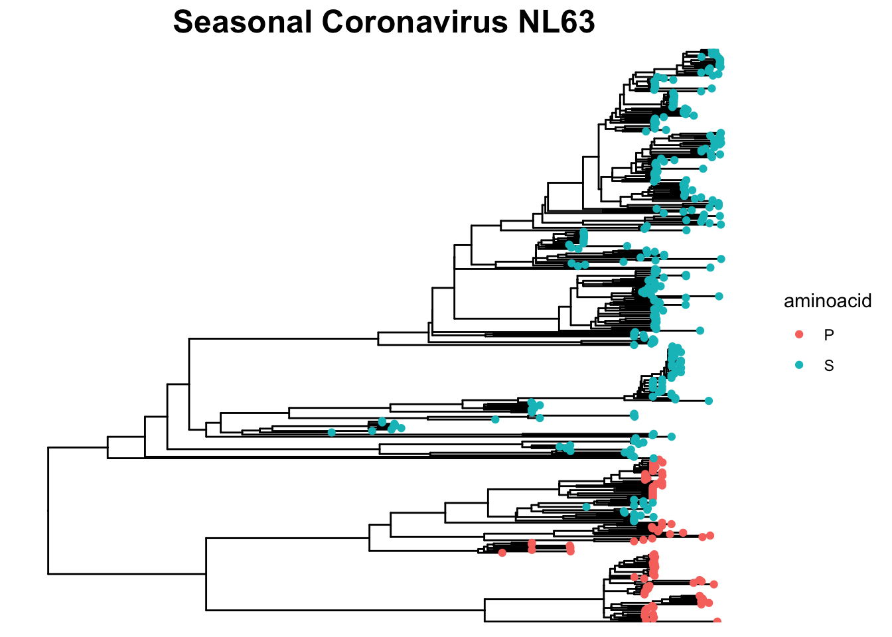
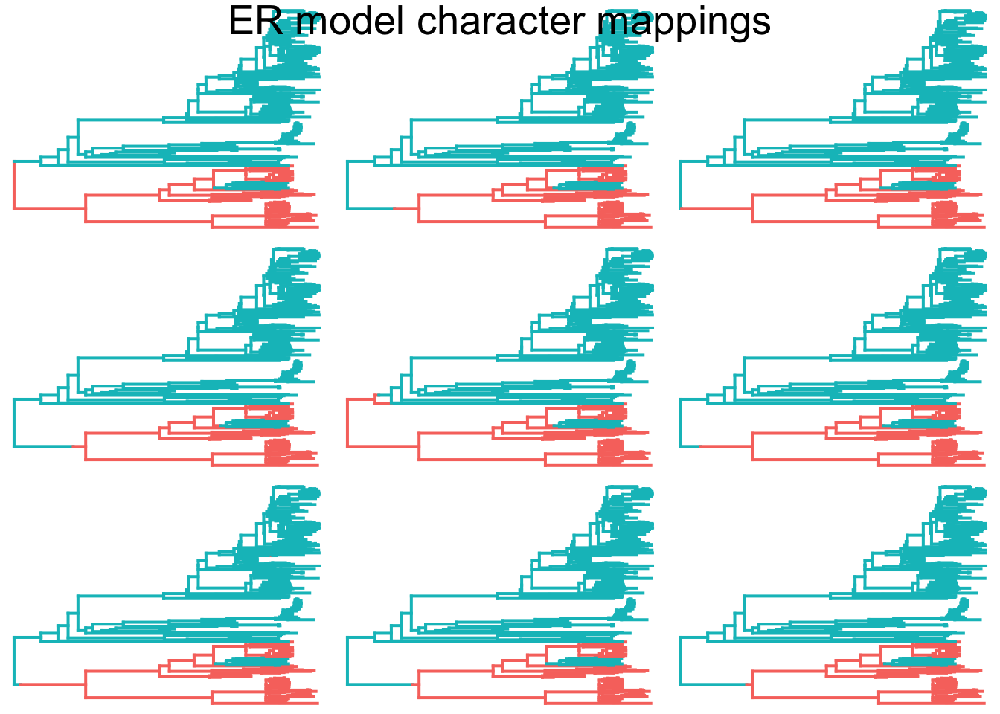
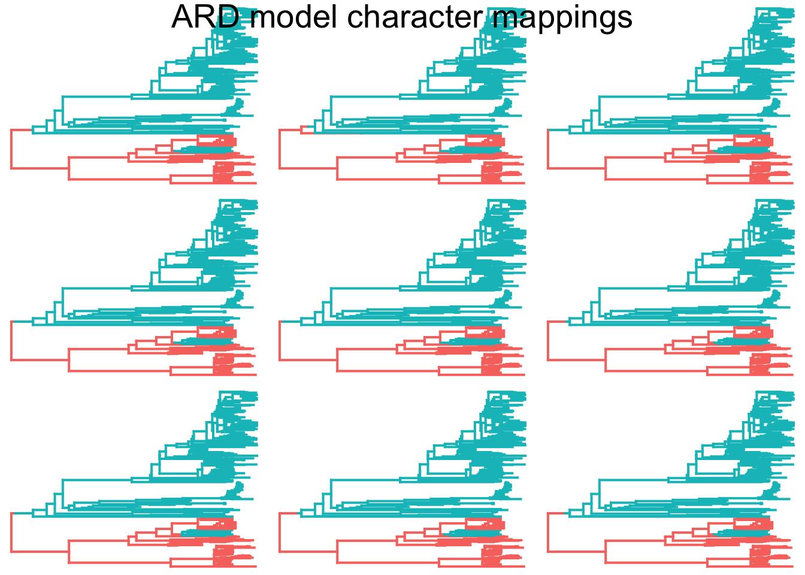
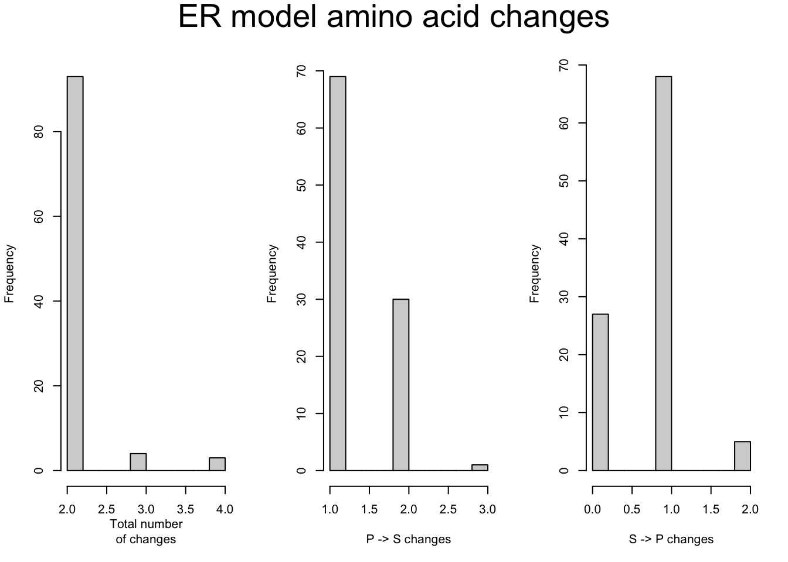
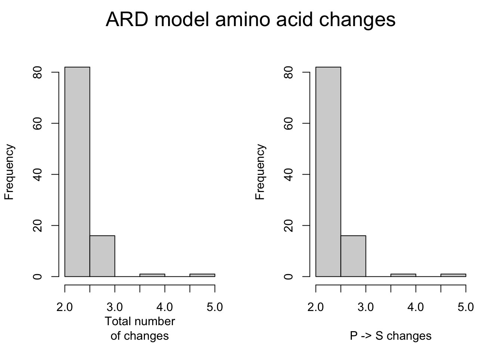

# rm(list=ls())
library(ape)
library(expm) # matrix exponential
library(ggtree)
library(ggplot2)
library(dplyr)
library(cowplot)
library(scatterpie)
library(phytools)Simulating stochasting character mappings
Carrying on from our last example of Seasonal Coronavirus NL63, we seek to address the following questions:
- How often did the S amino acid mutate into P, and vice versa?
- Where precisely do we think mutations occurred on the phylogeny?
With ancestral character estimation (ace), we approached answers to these questions. We considered two types of Markov models (equal rates, ER, and all rates different, ARD). The MLEs of the model parameters carry pretty different interpretations, but the ancestral estimates of past ancestors are largely insensitive to the particular model we used. The main difference we saw was concerning the inferred root state of the phylogeny in each model.
Stochastic character mapping, or character mapping, uses our fitted Markov chain models to annotate phylogenies with mutations along edges. So far, we have just been annotating internal nodes of the phylogenies with their most likely states, given the models and the data (tip data + phylogeny).
To perform character mapping, we will make use of a suite of functions from the phytools package in R.
Let’s start by loading in our Coronavirus NL63 phylogeny:
tree <- read.tree('coronavirus_nl63/nextstrain_seasonal-cov_nl63_timetree.nwk')
# Root the tree (not the most technically appropriate way to do this, but good enough for our illustrative purposes):
tree <- root(tree, node=Ntip(tree)+1 )
# Make the tree fully bifurcating:
tree <- multi2di(tree)
tree$edge.length[tree$edge.length < 0] <- .01
tree$edge.length[tree$edge.length == 0] <- .01
# Some of these tips have an amino acid change in the gene for the Spike protein. From Nextstrain, we can
# see that it is these ones:
Stips <- tree$tip.label
Ntips <- setdiff(extract.clade(tree, 402)$tip.label, extract.clade(tree, 473)$tip.label)
Stips <- setdiff(tree$tip.label, Ntips)
x <- rep(0, Ntip(tree))
names(x) <- tree$tip.label
x[Stips] <- "S"
x[Ntips] <- "P"
p <- ggtree(tree) + ggtitle('Seasonal Coronavirus NL63') +
theme(plot.title=element_text(hjust=0.5, size=18, face="bold"))
p <- p %<+% data.frame(label=tree$tip.label, aminoacid = as.factor(x))
p + geom_tippoint(aes(col=aminoacid))
Stochastic character mapping involves 3 steps:
- Fit a Markov model to the phylogeny (we did this using ace already)
- Sample ancestral state at internal nodes using the scaled likelihoods (calculated in step 1)
- Use the estimates from the fitted model to simulate changes of state along edges of the phylogeny that are compatible with the node states at the two ends of each edge (similar to how we simulated event times in the previous tutorial)
That’s it. Conceptually, it’s super simple. Computationally, it can be a little bit intense to simulate changes of state along edges that are compatible with node states at either end of the edge.
The phytools package has a few functions that we will use.
One of these is fitMk. This function is similar to ace, except that user may supply a “root prior” (e.g. 50% probability that the root is in state S or P, for our example). When we supply a root prior, we are optimizing a different objective function than ace. By default, fitMk uses a “flat” root prior, similar to what the likelihood function for ace does. The second distinction between fitMk and ace is that they use slightly different optimizers to find Maximum Likelihood Estimates (MLEs). Sometimes it can be convenient to try using both functions if one of them encounters numerical problems during optimization. It can also be a good idea to obtain estimates from both methods as a sanity check (although estimates will differ ever so slightly; on larger phylogenies, the estimates generally seem to converge to each other – at least in my experience).
The terminology “Mk” refers to a Markov model with \(k\) states.
The other useful function is simmap, which simulates a stochastic character mapping on a tree given a Markov model generator matrix. This is the function that actually carries out steps 2-3 above.
A third function make.simmap, does both steps (fitMk and simmap) in one go. Obviously it is not necessary to invoke make.simmap after running fitMk.
Note: there are methods that exist (such as Delphy) that estimate paramters using a Markov chain Monte Carlo routine that explores the space of character mappings. This is not what simmap and make.simmap do. They simply use ace/fitMk results to simulate character mappings on trees.
Comparing fitMk and ace
Let’s refit our two Markov models with ace, and then do the same thing using fitMk from phytools. The function calls are very similar (but fitMk switches the ordering of tree and tip data):
# fitting models with ace:
fit1.ace <- ace(x, tree, type='discrete', model='ER')
fit2.ace <- ace(x, tree, type='discrete', model='ARD')
# fitting models with fitMk:
fit1.fitMk <- fitMk(tree, x, model="ER")
fit2.fitMk <- fitMk(tree, x, model="ARD")How do the estimates for the ER model compare with the two methods?
fit1.ace$rates[1] 0.0008592213fit1.fitMk$rates[1] 0.0008605929The rate estimates are very close, but not exactly the same. The log-likelihood values at the MLE are also not identical:
fit1.ace$loglik[1] -11.89298fit1.fitMk$logLik[1] -12.58613The two functions, ace and fitMk, use slightly different likelihood functions, and different optimization routines to find the MLE. The fitMk function also allows users to supply a “root prior” different from a uniform distribution (which is the default in fitMk, see this post).
For large datasets, the choice of root prior in fitMk should (hopefully) not influence results too much.
For completeness, let’s compare the results of the ARD model with each method:
fit2.ace$rates[1] 0.000000000 0.003628625fit2.fitMk$rates[1] 0.000000000 0.003628625And the log-likelihoods:
fit2.ace$loglik[1] -10.28796fit2.fitMk$logLik[1] -10.98111So, the differences in the estimates themselves are negligible.
Simulate character mappings with simmap
The phytools package simulates stochastic character mappings easily once we have a fitMk object. Notice that our fit1.fitMk we created above has everything we need already, including the tree:
names(fit1.fitMk) [1] "logLik" "rates" "index.matrix" "states" "pi"
[6] "method" "root.prior" "opt_results" "data" "tree"
[11] "lik" The matrix for our fitted Markov chain is encoded in rates, index.matrix, and states.
Simulating character mappings is easy - we just call the simmap (“simulate mapping”) function:
simmap.er <- simmap(fit1.fitMk)Now, let’s plot some of these:
# specify the colors:
cols <- c("#F8766D","#00BFC4")
names(cols) <- c("P","S")
par(mfrow=c(3,3))
for(i in 1:9){
plotSimmap(simmap.er[i],
ftype="off",
colors=cols)
}
mtext('ER model character mappings', side=3, line=-2, outer=TRUE,cex=1.7)
As you can see, these trees differ subtly in terms of the precise locations of amino acid changes along edges. Some of these have the root state residing in one state or the other.
What about the ARD model that estimated unidirectional change only?
# Simulate character mappings:
simmap.ard <- simmap(fit2.fitMk)
# specify the colors:
cols <- c("#F8766D","#00BFC4")
names(cols) <- c("P","S")
par(mfrow=c(3,3))
for(i in 1:9){
plotSimmap(simmap.ard[i],
ftype="off",
colors=cols)
}
mtext('ARD model character mappings', side=3, line=-2, outer=TRUE,cex=1.7)
All of these character mappings assign the root state to the amino acid P. However, the collection of character mapping still has variable numbers of mutations across the different simulations. The majority of the time, the P to S mutation giving rise to the large blue clade in the upper part of the trees does appear to be happening pretty early with high probability.
We can also make some summary plots that include gradients in color on edges that describe average probabilities across the simulations (but getting our color scheme to work is a little tricky).
densityMap(simmap.er, ftype='off', main='ER model')densityMap(simmap.ard, ftype='off', main='ARD model')Quantifying the distribution of trait changes under the fitted models
Under the MLE for these models, how often does S change to P, and vice versa? (We know that S will never change to P under the ARD model, but there still may be some uncertainty concerning the number of times P changed to S.)
The function countSimmap does this readily for us:
counts.er <- countSimmap(simmap.er)
par(mfrow=c(1,3))
hist(counts.er$Tr[,'N'], xlab='Total number\nof changes', main='')
hist(counts.er$Tr[,'P,S'], xlab='P -> S changes', main='')
hist(counts.er$Tr[,'S,P'], xlab='S -> P changes', main='')
mtext('ER model amino acid changes', side=3, line=-2, outer=TRUE,cex=1.7)
counts.ard <- countSimmap(simmap.ard)
par(mfrow=c(1,2))
hist(counts.ard$Tr[,'N'], xlab='Total number\nof changes', main='')
hist(counts.ard$Tr[,'P,S'], xlab='P -> S changes', main='')
#hist(counts.ard$Tr[,'S,P'], xlab='S -> P changes', main='')
mtext('ARD model amino acid changes', side=3, line=-2, outer=TRUE,cex=1.7)
# ^^^ there are no changes from S to P in the fitted ARD modelSo, in the ER model, the data support two amino acid changes, one from P to S, and one from S to P. This is consistent with our Hypothesis 1 from earlier, which posits that the small S clade nested within the P clade represents a back-mutation, returning to the ancestral state, S.
In the ARD model, the data are consistent with two P to S mutations, one of which was long ago, and the other more recent. There is some support for 3 P to S mutations, two of which probably happened long ago.